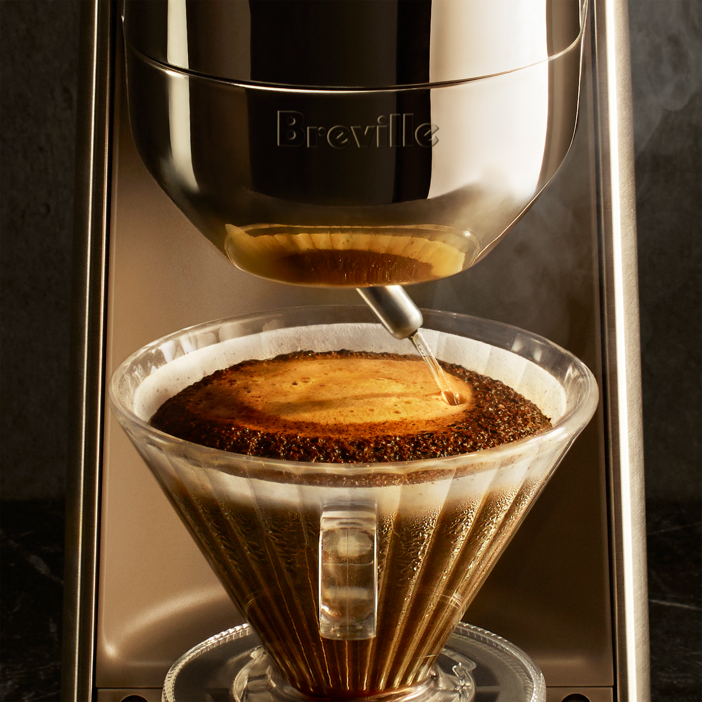

厨房智能硬件 · 品类与交互
滤杯自己走两步：把研磨与手冲接成一条流程
Breville Spiral Luxe让滤杯在磨豆机与注水嘴之间移动，把早晨手冲的一次搬运交给机器。

Breville的Spiral Luxe Auto Pour-Over先把滤杯收至内置研磨器下方接粉，再将它移到注水嘴下冲煮。可摆动的出水嘴按螺旋轨迹注水，研磨、移位、萃取由同一台设备衔接，过程仍能从开放的前侧看见。
操作分成两层：日常选择杯量和浓淡，进阶模式再调整粉水比、水温、注水段数与停顿。官方还提供预磨咖啡粉旁路；自动化覆盖的是冲煮流程，滤纸丢弃、滤杯与壶具清洁仍需用户完成。
Yanko Design近期关注这套滑动机构，本期据官方产品页核对功能。透明滤杯使用Tritan材料，下方分享壶才是玻璃；快速加热也不等于咖啡瞬间完成。该产品不被表述为当天首发或具备已验证的AI自适应能力。
Breville｜Spiral Luxe 官方产品页 · 产品页无发布日期 · 10月26日核验Yanko Design｜滑动滤杯自动手冲设计观察 · 10月24日 10:20 PDT（北京时间10月25日01:20）近期设计观察：报道折合北京时间10月25日01:20，早于本期24小时窗口；已降低时效评分。